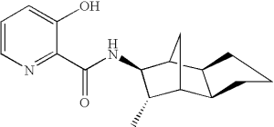

{kind=link}

Imago OCR is a toolkit for 2D chemical structure image recognition. It contains a GUI program and a command-line utility, as well as a documented API for developers. Imago is completely free and open-source, while also available on a commercial basis.
The core part of Imago is written from scratch in modern C++. It uses the best known algorithms for optical recognition. That guarantees Imago's outstanding portability and performance.
Imago OCR project is under active development. You can post us your comments and suggestions and get timely replies from the developers' team.
| Source image | Recognized structure |
|---|---|
|  | |
| USRE039991-20080101-C00100.png | molecule.mol |
You can find more examples on this page.
You can evaluate the Imago OCR recognition quality on the Imago Demo web page.
We created a detailed report with sets of different images that compares Imago OCR with other publicly available solutions. The report is available on a separate web page. The scripts and the image sets are available in the download section.

If you can suggest other test sets or other publicly available solutions we would be happy to include them too in the report.
Presentation at the Symposium on 244th ACS National Meeting & Exposition:
Imago library is written in portable C++ and supports Linux, Windows, and Mac OS X operating systems, both 32-bit and 64-bit versions of each system.
Imago exposes the C interface to applications. Java wrapper is available for all supported platforms. A Java GUI application called Imago OCR Visual Tool is provided, and a command-line utility imago_console is provided as well.
The dependencies are included into the distribution packages, and so you do not need to download any of them separately to run the programs or to compile the source code.
Imago C++ dependencies:
Java-specific dependencies:
More details on the dependencies (including their licenses) you can find on a separate page
Both the Imago OCR project and the imago_console tool are supporting the most popular raster
image formats: PNG, JPEG, BMP, DIB, TIFF, PBM, RAS and others (depending on platform).
Imago OCR Visual Tool users can also open PDF files, choose the needed document page (if it is PDF or TIFF),
and select a fragment that should be recognized.
Developers who use the C API can pass supported format images or raw image data to the library.
Recognition result can be saved as MDL (Symyx, Accelrys) Molfiles. Imago OCR Visual Tool also provides a possibility
to copy the recognized molecule to the system clipboard.
Look at the Downloads page for the installation package suitable for your system.
There is an installer for Windows, and zipfiles for Linux and Mac OS X, which you can just unpack
into /usr/local/bin or /opt directory, or into your home directory.
You can run Imago OCR Visual Tool even without installing any files using Java Web Start technology. Open the following JNLP-file to execute Imago OCR Visual Tool.
Copyright © 2009-2013 GGA Software Services LLC
This program is free software: You can redistribute it and/or modify it under the terms of the GNU General Public License as published by the Free Software Foundation; version 3 of the License.
This program is distributed in the hope that it will be useful, but WITHOUT ANY WARRANTY; without even the implied warranty of MERCHANTABILITY or FITNESS FOR A PARTICULAR PURPOSE. See the GNU General Public License for more details.
You should have received a copy of the GNU General Public License along with this program. If you did not, please see http://www.gnu.org/licenses/.
Do you need assistance using our tools? Do you need a feature? Do you want to send a patch to us? Did you find a bug? Please write to one of the following newsgroups and let us know:
No registration is required: you can write from your ordinary e-mail account to indigo-bugs@googlegroups.com, indigo-dev@googlegroups.com, or indigo-general@googlegroups.com to get your message posted.
If the GPL-licensed Imago does not fit your needs, please contact us at info@ggasoftware.com to discuss the purchase of a commercial license. You may need the commercial license if you want to:
{kind=link}